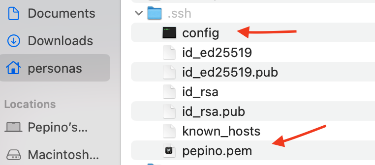
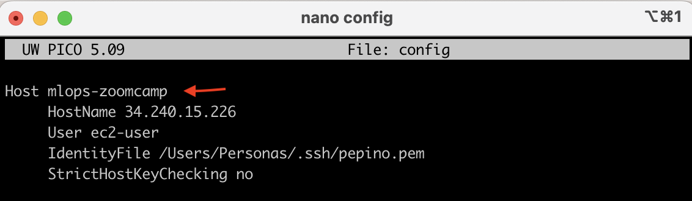
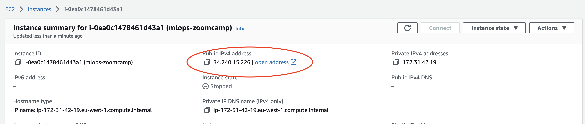
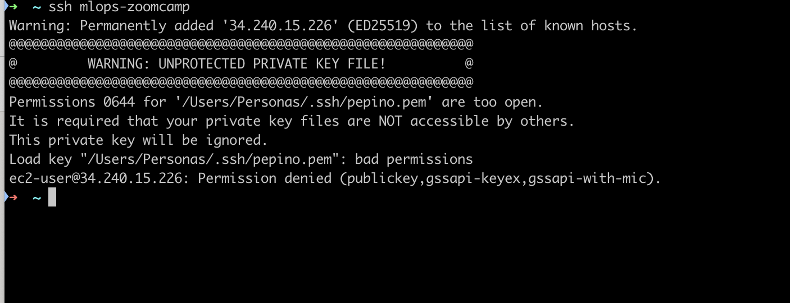
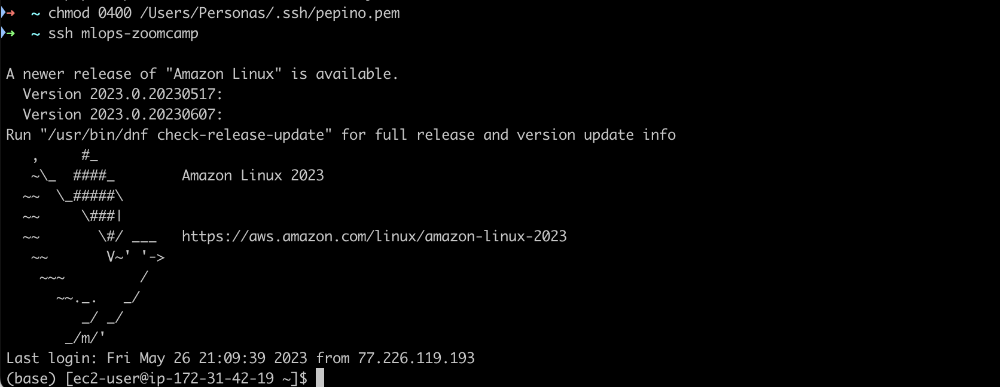

If you want to create a MLOps project, it is likely that you will interact with services offered by a cloud provider. For doing that you will likely require to link your local machine to any of the instances offered by the cloud provider. In this post, we will see how to set up the environment for a Mac machine to work with an EC2 instance on AWS.
Launch an instance on AWS
An instance is a server that provides computing services and that is managed by the cloud provider. AWS offers different types of instances depending on the activity to be performed (computation, memory intensive or graphic intensive).
The most common instances for general use are the Elastic Compute Cloud - EC2 - which offer a range of combinations in terms of CPU, storage and networking capacity. For choosing the right instance there are three main points to consider:
Define the operating system for the Amazon Machine Image: Linux, macOS, Ubuntu, Windows…
Define the instance type : nano, mini, large…
Define the key pair : This is important for connecting your local machine to the instance since these are the security credentials to prove the identity when connecting to an EC2 instance. There are two key types available:
.pemand.ppk
Connection of EC2 to local machine
A convenient type of instance for MLOps can be a t2.xlarge Amazon Linux 2023. I provides a fair value for the computation power acquired. Yet, the choice of the type of instance will depend on the nature of the project and the budget available.
Locate the key pair file in your machine
Once the instance is launched on AWS management console, the way to connect it to your local machine is by locating the .pem key pair created when launching the instance, in the .ssh (hidden)1 folder of the local machine and running the following command on the terminal
ssh -i ~/.ssh/<name of pem_file.pem> ec2-user@<public IPv4 address>

This code essentially connects the local machine to the AWS instance. Note that the user name associated with Mac is not @ubuntu but ec2-user instead.
Modify the host alias
To avoid adding the public IPv4 address every time the instance is launched, we can modify the config file in the .ssh folder and provide an alias (for example mlops-zoomcamp) to the Host. The aim for that is to avoid typing such a long instruction and connect it using the alias instead.

The config file is composed of the following Linux parameters.
Host: Is the alias you want to use to launch your instance
HostName: Is the Public IPv4 address of your instance.
⚠️ Every time the instance is launched this parameter changes and therefore it also needs to be changed in the config file ⚠️

IdentityFile: File with the key
StrictHostKeyChecking: It specifies if there are host keys checked
Link the key pair to AWS instance
To connect to the instance you just need to type the following command
ssh <host_alias>
The first time you try to connect you may receive the following message

In that case you need to change the permissions of the public key using chmod 0400 <location_pem_file> 2

Voilà 🥳 …. now your machine is connected.